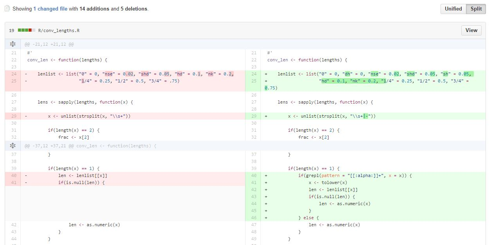

slides http://bit.ly/1Jqzl3E
Jan 2013, an Excel user*
*abuser
R is a free software environment for statistical computing and graphics
Coursera courses run by Johns Hopkins
Statistical Learning by Stanford
Stat545 by University of British Columbia
start writing code
write more code
Git allows programmers to track changes they make to their code, these changes could include
